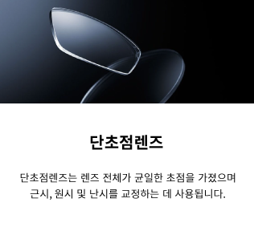
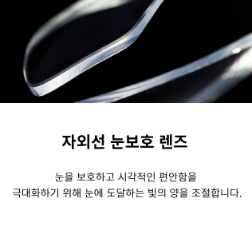

렌즈 찾기 필터
기업 소개
전문가 조언
나의 시력
어떤 종류의
렌즈를 찾고 있나요?
안경렌즈
선글라스
착색 안경렌즈
변색렌즈
렌즈종류
디지털 기기 사용
요리 및 취미 활동
야외 활동(운동 및 여행)
게임
독서
누진다초점렌즈
실내/오피스 렌즈
단초점렌즈
피로 완화 기능성 렌즈
블루 라이트 눈 보호
자외선 눈 보호 렌즈
스타일리시한 렌즈
얇고 가벼운 렌즈
선명하고 투명하고 렌즈
렌즈 종류
종
인기순
최신순

